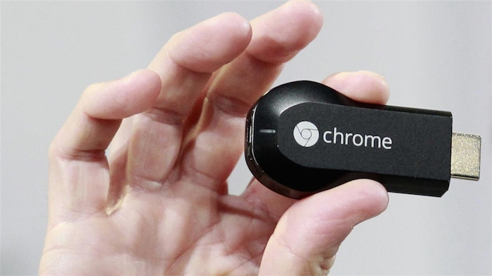
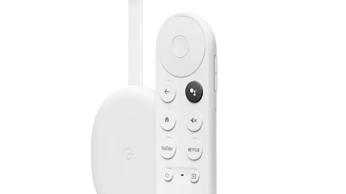

Chromecast改变了全球很多人的视听娱乐模式。
照片：Getty Images / Kangah
RCI
不少家庭都会用谷歌的Chromecast，将手机、电脑或平板电脑的内容串流到电视大萤幕上。但美国科技巨头表示，将停止生产这小小的媒体播放器。
Chromecast自2013年推出以来，全球销量已超过一亿台。
Chromecast是一个带有HDMI接口的小型设备，可直接插入电视使之成为智能设备，以访问数以千计的应用程序，包括 Netflix和Youtube。它还能让你将电脑、平板电脑或智能手机上的图像串流到电视上，而毋须使用线缆。
但它最大的吸引力在于价格。2022年发布的最新一代Chromecast，在加拿大售约40元。
谷歌工程、健康和家庭部副总裁巴卡尔（Majd Bakar）曾表示，Chromecast的经济实惠，使数百万人都能使用，是许多人的完美礼物。
不过，谷歌认为产品推出十一年后，技术已发生重大变化，因此是时候作出改变。
谷歌将于九月推出新设备Google TV Streamer
，公司指这款机顶盒比最新的Chromecast处理器快22%。
不过新产品价格为130元，比Chromecast贵约三倍。
消费者是输家
魁北克奇库提米大学（Université du Québec à Chicoutimi）市场营销学教授埃尔兹（Myriam Ertz）认为，新产品对消费者不是好消息，他们首先要投入额外金钱和时间。

2013年第一代Chromecast。
照片：Reuters / Beck Diefenbach
许多人已经习惯了Chromecast，但为了一样的功能，却不得不改用新产品。
市面上其他选择，包括更昂贵的Apple TV。亚马逊的Fire电视棒和Roku，也是经济的解决方案。
Chromecast之后会怎样？
谷歌表示，现有存货将继续发售。公司又承诺，在Chromecasts设备推出后至少五年内，将继续提供软件和安全更新。
换言之，最新一代2022年推出的Chromecast，用户可以至少在2027年之前仍然得到更新。
但当更新终止，将预示Chromecast的真正死亡。

谷歌最2022年推出的Chromecast将成最后一代。
照片：Google
当然，最能经得上时间考验的方案，仍然是HDMI线缆，即从电脑连接到电视的线缆。
Stéphanie Dupuis de Radio-Canada, adaptation en chinois par Donna Chan.
Début du widget Widget. Passer le widget ?
Fin du widget Widget. Retourner au début du widget ?文章来源于RCI:谷歌Chromecast宣佈停产